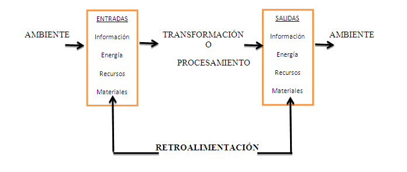
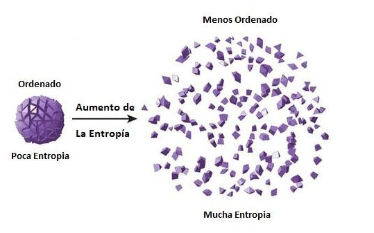
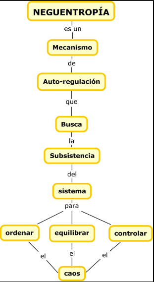
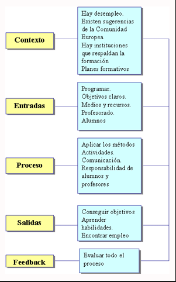
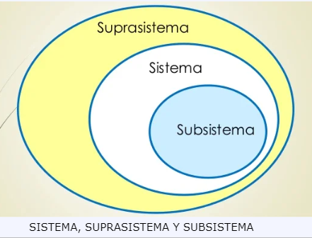

TEORIA GENERAL DE SISTEMAS
Definicion
En un sentido amplio, la Teoría General de Sistemas, se presenta como una forma sistemática , científica de aproximación y representación de la realidad, de igual manera como una orientación hacia una práctica estimulante para formas de trabajo transdisciplinarias. La TGS se caracteriza por su perspectiva holística e integradora, en donde lo importante son las relaciones y los conjuntos que a partir de ellas emergen. La TGS ofrece un ambiente adecuado para la interrelación y comunicación fecunda entre especialistas y especialidades. La TGS la ejemplifican como una perspectiva cientifica, ya que en sus distinciones conceptuales no ahi explicaciones o relaciones con contenidos preestablecidos, pero aplicando orden en ella podemos dirigir la observacion, haciendola operar en ambientes reconocibles.

Elementos de un sistema
Los elementos que conforman un sistemas son:
Entorno o Ambiente. El entorno se puede definir, como un concepto no propio en un sistema pero que ofrece las entradas al sistema y recibe las salidas del mismo.
Ambiente. Se define como el lugar en donde se desarrolla es sistema.
Entrada. Es la materia prima que necesita el sistemas para desarrollar el proceso que realiza, es decir la materia es esa parte esencial o inherente a una estructura o función específica dentro del organismo.
Salida. Es el resultado obtenido por el sistema despues de haber realizado el proceso y la transfomacion de la materia prima.
Proceso. Son todas aquellas actividades que se desarrollan en el sistema, ejecucion de procesos y transformacion. En algunas ocaciones las actividades que se desarrollan en el sistema son observaboles, pero en otros en como una caja negra en donde no se puede identificar los procesos que se desarrollan.
Retroalimentacion. Es un mecanismo que permite la autorrefgulacion del sistema con respecto al entorno en donde se desarrolla.
Entropia y Neguentropia
Entropia. El segundo principio de la termodinamica establece el crecimiento de la entropia. La maxima probabilidad de los sistemas en su progresiva desorganizacion, es decir, entre mas sea la desorganizacion, sera mas evidente la entropia
Neguentropia. Este concepto se refiera a la extraccion de energia extra, que exporta un sistema de su ambiente para mantener su organizacion y sobrevivir. Es el proceso totalmente opuesto de Entropia, entre mas sea la organizacion en un sistemas, sera mas evidente la Neguentropia
 Componentes de un sistema
Otros conceptos que hacen poarte de los sistemas son:
Totalidad. La premisa de esta caracteristica se radica en la observacion de un sistema y a su vez la ingracion y unidad de sus partes, la verdadera funcion de un sistema se puede observar cuando se pueden identificar todos sus componentes y sus interacciones.
Finalidad. Los sistemas tienden a desarrollar las funciones para las que fueron creadas, ya que es la razon de su existencia. El sistema siempre tiende a realizar y cumplir su proposito.
Equifinalidad. Se da cuando en dos o mas sistemas los resultados tineden a ser los mismos, pero la forma en la que se desarrollan es diferente o sus estados iniciales son diferentes.
Equipotencialidad. Contrario de la Equifinalidad, esta se da cuando dos o mas sistemas tienden a obtener diferentes resultados a pesar que su forma de desarrollo es la misma o sus estados iniciales son iguales.
Homeostasis. Es la tendencia de un sistema en mantenerse autorregulado y de esta forma adaptarce perfectamente a su ambiente.
Morfogenesis. Un sistema también tiene la posibilidad de generar tendencias que estimulen drásticamente su cambio.
Sinergia. Es un efecto producido en los sistemas, en la que varios de sus componentes se unen para lograr mayor eficiencia.
Identificacion de subsistemas
Para poder definir y identificar un subsistema, es importante entender que rodea a un subsistema.
Suprasistema. Se define como el medio que rodea al sistema. Es un sistema mayor que contiene a los sistemas menores.
Sistema. Totalida coherente. Grupo de unidades combinadas que forman un todo organizado.
Subistema. Los componentes del sistema. Conjuntos de elementos y relaciones que responden a estructuras y funciones especializadas dentro de un sistema mayor.
Relacion entre partes y propiedades emergentes Entropia y Neguentropia
La entropia y la neguentropia. Se encuentra relacionada con las leyes de la termodinamica, que son las que se encuentran relacionados con el intercambio de energia y con la tendencia de flujos. Especialmente energia calorica, la cual explica que los sistemas aislados tienden al desorden "Entropia".


Ejemplos y aplicaciones
Para ver ejemplos y aplicaciones de los sistemas, observemos primero los tipos de sistemas.
Sistemas artificiales. Son sistemas que no existen fisicamente, sino que su existencia se trata de ideas, planes y conceptos ideados por mentes humanas.
Ejemplo. Sistemas Economicos.
Sistemas naturales. Son los sistemas que si existe, se pueden observar en los entornos que nos rodean.
Ejemplo. Ciclo del agua.
Sistemas abiertos. Son sistemas que se relacionan con su ambiente mediante el cambio de energia, materia o informacion, elementos que comparten activamente con el entorno.
Ejemplo. Una biblioteca.
Sistemas cerrados. Son sistemas herméticos, que recibe muy poca o nula influencia del ambiente que le rodea.
Ejemplo. Un reloj.
Sistemas temporales. Son sistemas que tienden a una duracion de tiempo definida, luego desaparecen.
Ejemplo. Un ser humano.
Sistemas permanentes. Son sistemas que tienen una duracion de tiempo constante y prolongada.
Ejemplo. El universo.
Sistemas estables. Son sistemas en los que sus niveles se mantienen con nula o relativamente alta invariabilidad.
Ejemplo. Sistema numerico decimal.
Sistemas inestables. Son sistemas en los que sus niveles deben varíar constantemente para adecuarse al ambiente o a sus entradas.
Ejemplo. Reaccion quimica.